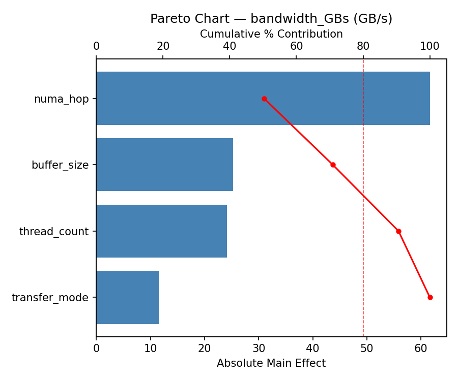
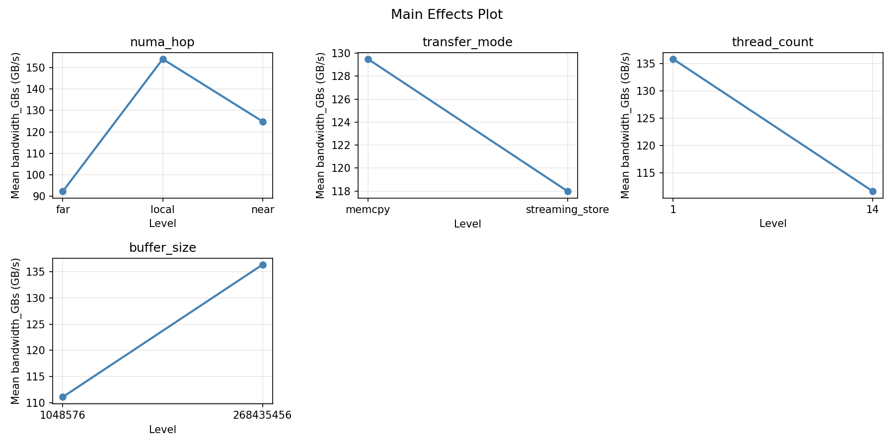
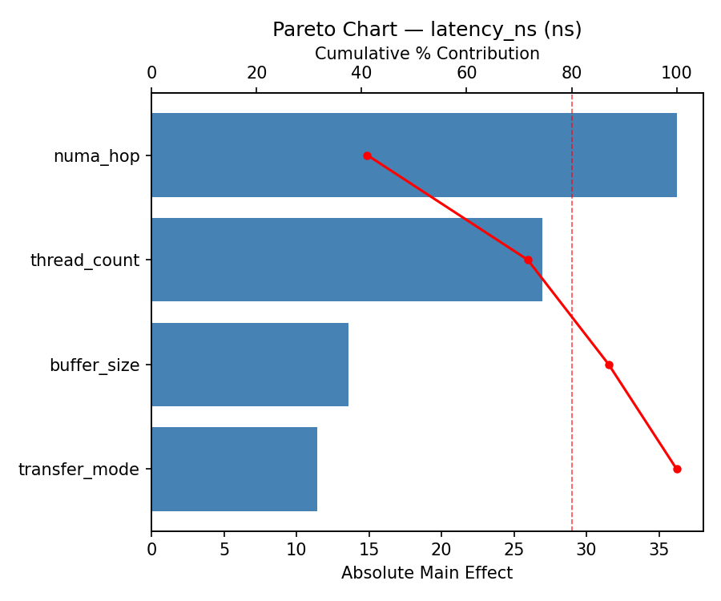
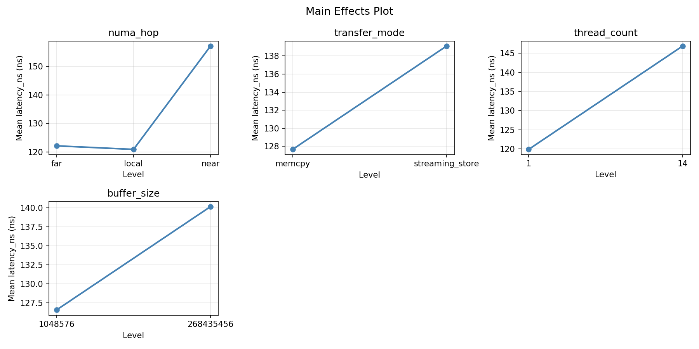
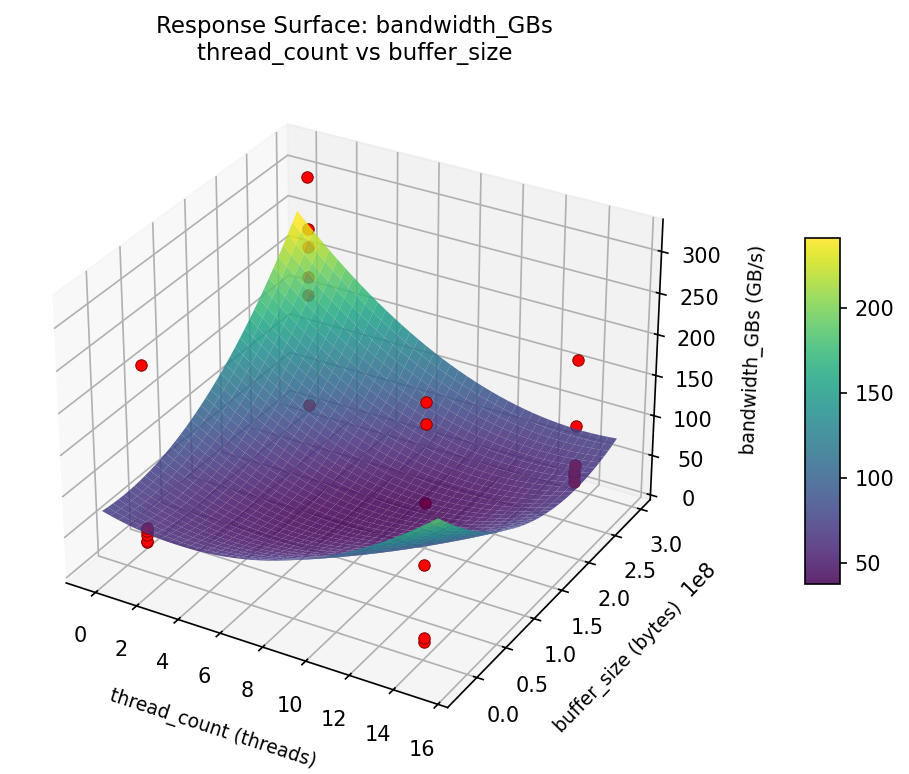
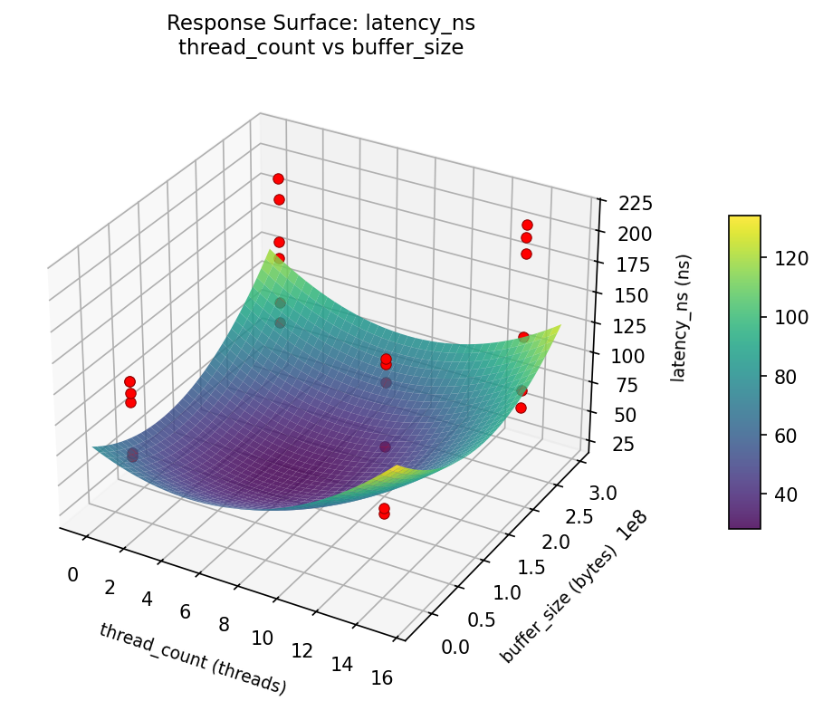

Experimental Setup
Factors
| Factor | Levels | Type | Unit |
|---|
numa_hop | local, near, far | categorical | |
transfer_mode | memcpy, streaming_store | categorical | |
thread_count | 1, 14 | continuous | threads |
buffer_size | 1048576, 268435456 | continuous | bytes |
Fixed: sockets = 4, cores_per_socket = 28, numa_distance_near = 21, numa_distance_far = 31
Responses
| Response | Direction | Unit |
|---|
bandwidth_GBs | ↑ maximize | GB/s |
latency_ns | ↓ minimize | ns |
Experimental Matrix
The Full Factorial Design produces 24 runs. Each row is one experiment with specific factor settings.
| Run | numa_hop | transfer_mode | thread_count | buffer_size |
|---|
| 1 | near | streaming_store | 14 | 268435456 |
| 2 | local | streaming_store | 1 | 268435456 |
| 3 | far | memcpy | 14 | 1048576 |
| 4 | far | streaming_store | 14 | 268435456 |
| 5 | near | streaming_store | 1 | 268435456 |
| 6 | near | memcpy | 14 | 1048576 |
| 7 | far | memcpy | 1 | 268435456 |
| 8 | near | memcpy | 14 | 268435456 |
| 9 | near | streaming_store | 14 | 1048576 |
| 10 | far | memcpy | 1 | 1048576 |
| 11 | local | memcpy | 1 | 268435456 |
| 12 | near | streaming_store | 1 | 1048576 |
| 13 | far | streaming_store | 1 | 268435456 |
| 14 | local | streaming_store | 14 | 1048576 |
| 15 | near | memcpy | 1 | 268435456 |
| 16 | local | memcpy | 14 | 1048576 |
| 17 | far | streaming_store | 14 | 1048576 |
| 18 | local | streaming_store | 1 | 1048576 |
| 19 | far | memcpy | 14 | 268435456 |
| 20 | local | streaming_store | 14 | 268435456 |
| 21 | near | memcpy | 1 | 1048576 |
| 22 | local | memcpy | 1 | 1048576 |
| 23 | local | memcpy | 14 | 268435456 |
| 24 | far | streaming_store | 1 | 1048576 |
How to Run
$ python doe.py info --config use_cases/17_cpu_cross_numa_bandwidth/config.json
$ python doe.py generate --config use_cases/17_cpu_cross_numa_bandwidth/config.json --output results/run.sh --seed 42
$ bash results/run.sh
$ python doe.py analyze --config use_cases/17_cpu_cross_numa_bandwidth/config.json
$ python doe.py optimize --config use_cases/17_cpu_cross_numa_bandwidth/config.json
$ python doe.py report --config use_cases/17_cpu_cross_numa_bandwidth/config.json --output report.html
Analysis Results
Generated from actual experiment runs.
Response: bandwidth_GBs
Pareto Chart

Main Effects Plot

Response: latency_ns
Pareto Chart

Main Effects Plot

Response Surface Plots
3D surfaces fitted with quadratic RSM. Red dots are observed data points.
bandwidth_GBs: thread_count vs buffer_size

latency_ns: thread_count vs buffer_size

Full Analysis Output
=== Main Effects: bandwidth_GBs ===
Factor Effect Std Error % Contribution
--------------------------------------------------------------
numa_hop 66.7375 20.9093 43.3%
buffer_size -59.2917 20.9093 38.5%
thread_count -16.8250 20.9093 10.9%
transfer_mode 11.2250 20.9093 7.3%
=== Interaction Effects: bandwidth_GBs ===
Factor A Factor B Interaction % Contribution
------------------------------------------------------------------------
transfer_mode buffer_size 53.1583 67.9%
transfer_mode thread_count 13.2583 16.9%
thread_count buffer_size 11.9083 15.2%
=== Summary Statistics: bandwidth_GBs ===
numa_hop:
Level N Mean Std Min Max
------------------------------------------------------------
far 8 162.7625 94.4747 19.8000 297.6000
local 8 112.4250 110.3910 15.8000 316.2000
near 8 96.0250 102.9568 30.8000 271.9000
transfer_mode:
Level N Mean Std Min Max
------------------------------------------------------------
memcpy 12 118.1250 111.6678 15.8000 316.2000
streaming_store 12 129.3500 96.9587 19.8000 297.6000
thread_count:
Level N Mean Std Min Max
------------------------------------------------------------
1 12 132.1500 97.0430 29.9000 316.2000
14 12 115.3250 111.2100 15.8000 297.6000
buffer_size:
Level N Mean Std Min Max
------------------------------------------------------------
1048576 12 153.3833 112.8749 15.8000 316.2000
268435456 12 94.0917 85.3295 29.7000 297.6000
=== Main Effects: latency_ns ===
Factor Effect Std Error % Contribution
--------------------------------------------------------------
numa_hop 58.3750 10.4980 78.9%
buffer_size 8.4917 10.4980 11.5%
thread_count -3.8250 10.4980 5.2%
transfer_mode -3.2750 10.4980 4.4%
=== Interaction Effects: latency_ns ===
Factor A Factor B Interaction % Contribution
------------------------------------------------------------------------
transfer_mode thread_count -12.8250 40.2%
thread_count buffer_size -10.3917 32.6%
transfer_mode buffer_size 8.6583 27.2%
=== Summary Statistics: latency_ns ===
numa_hop:
Level N Mean Std Min Max
------------------------------------------------------------
far 8 158.7500 42.0005 83.0000 202.0000
local 8 141.0125 57.9953 68.6000 212.3000
near 8 100.3750 38.9371 61.5000 180.2000
transfer_mode:
Level N Mean Std Min Max
------------------------------------------------------------
memcpy 12 135.0167 47.3819 65.8000 200.5000
streaming_store 12 131.7417 57.2674 61.5000 212.3000
thread_count:
Level N Mean Std Min Max
------------------------------------------------------------
1 12 135.2917 53.3590 65.8000 212.3000
14 12 131.4667 51.7232 61.5000 205.1000
buffer_size:
Level N Mean Std Min Max
------------------------------------------------------------
1048576 12 129.1333 52.7718 61.5000 202.0000
268435456 12 137.6250 52.0217 65.8000 212.3000
Optimization Recommendations
=== Optimization: bandwidth_GBs ===
Direction: maximize
Best observed run: #14
numa_hop = local
transfer_mode = memcpy
thread_count = 14
buffer_size = 268435456
Value: 316.2
RSM Model (linear, R² = 0.0488, Adj R² = -0.1514):
Coefficients:
intercept: +123.7375
numa_hop: -13.7938
transfer_mode: +9.9542
thread_count: -7.8542
buffer_size: +14.2625
Predicted optimum:
numa_hop = far
transfer_mode = streaming_store
thread_count = 1
buffer_size = 268435456
Predicted value: 169.6021
Factor importance:
1. buffer_size (effect: 28.5, contribution: 31.1%)
2. numa_hop (effect: 27.6, contribution: 30.1%)
3. transfer_mode (effect: 19.9, contribution: 21.7%)
4. thread_count (effect: -15.7, contribution: 17.1%)
=== Optimization: latency_ns ===
Direction: minimize
Best observed run: #18
numa_hop = near
transfer_mode = streaming_store
thread_count = 1
buffer_size = 1048576
Value: 61.5
RSM Model (linear, R² = 0.2038, Adj R² = 0.0362):
Coefficients:
intercept: +133.3792
numa_hop: -25.4563
transfer_mode: +1.2792
thread_count: -0.8292
buffer_size: -9.0708
Predicted optimum:
numa_hop = far
transfer_mode = streaming_store
thread_count = 1
buffer_size = 1048576
Predicted value: 170.0146
Factor importance:
1. numa_hop (effect: 50.9, contribution: 69.5%)
2. buffer_size (effect: -18.1, contribution: 24.8%)
3. transfer_mode (effect: 2.6, contribution: 3.5%)
4. thread_count (effect: -1.7, contribution: 2.3%)